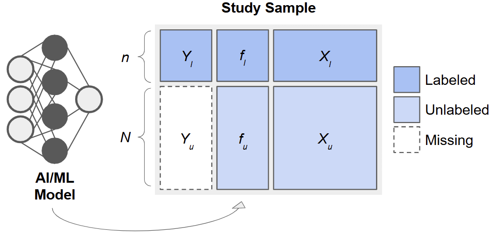
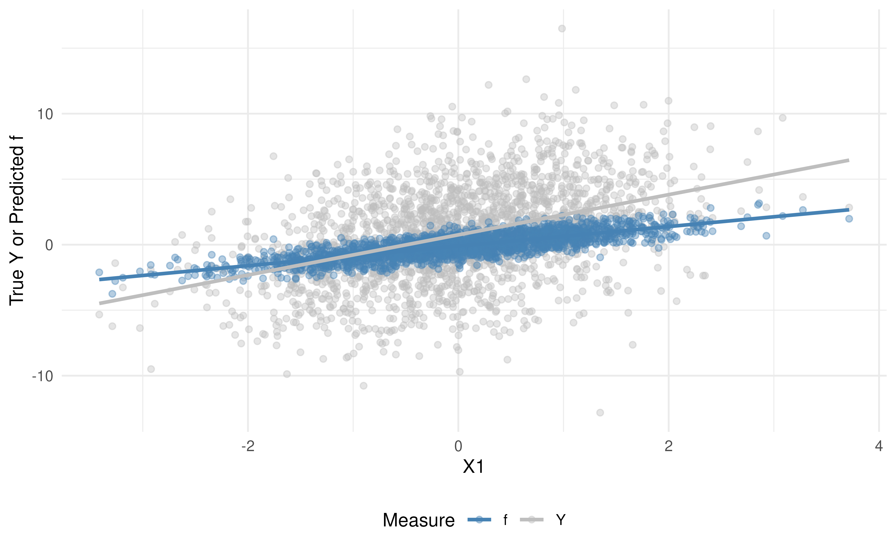
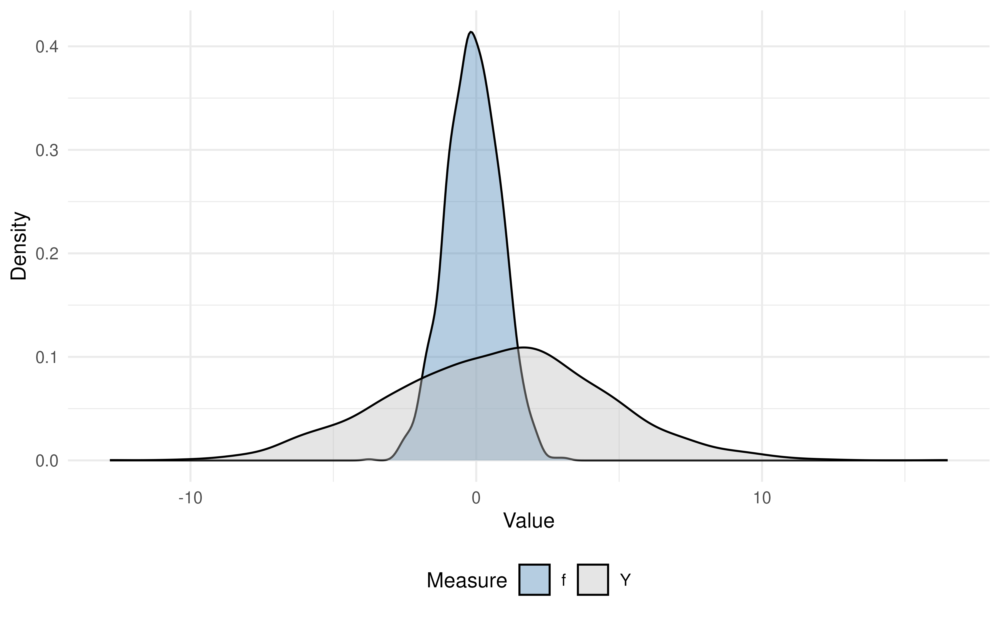
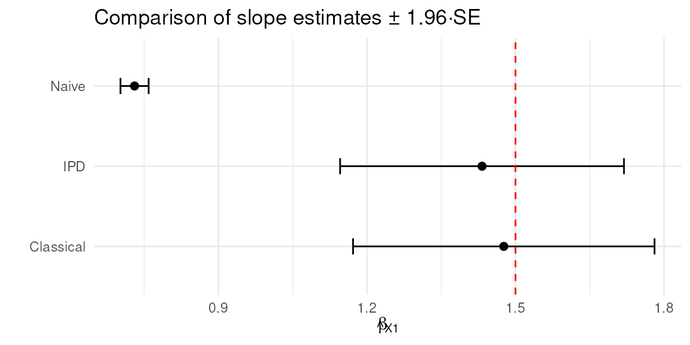

Unit 00: Getting Started
Stephen Salerno
June 24, 2025
Source:vignettes/Unit00_GettingStarted.Rmd
Unit00_GettingStarted.RmdOverview
Welcome to this workshop on Inference with Predicted Data (IPD)! In this module, we will:
- Introduce the
ipdpackage and its main functions. - Demonstrate how to generate synthetic data for different types of outcomes.
- Fit and compare various IPD methods.
- Inspect results using built-in
tidy,glance, andaugmentmethods.
Throughout the workshop, exercises are provided with solutions for practice.
Background and Motivation
When an outcome, , is costly or difficult to measure, it can be tempting to replace missing values with predictions, , from a machine learning model (e.g., a random forest or neural network) built on easier-to-measure features, . However, using as if it were the true outcome in downstream analyses, e.g., in estimating a regression coefficient, , for the association between and , leads to biased point estimates and underestimated uncertainty. Methods for Inference with Predicted Data (IPD) address this by leveraging a small subset of “labeled” data with true values to calibrate inference in a larger “unlabeled” dataset.
The IPD Framework
Consider data arising from three sets of observations:
- Training Set: , used to fit a predictive model, .
- Labeled Set: , smaller sample with true outcomes measured.
- Unlabeled Set: , only features available.
After fitting on the training set, we apply it to the labeled and unlabeled sets to obtain predictions :

Especially for ‘good’ predictions, it is tempting to treat in the labeled and unlabeled sets as surrogate outcomes and use them to estimate quantities such as regression parameters, . However, as we will see, this leads to invalid inference. By combining the predicted with the observed in the labeled set, we can calibrate our estimates and standard errors to achieve valid inference.
Key Formulas
Consider a simple linear regression model for the association between and . We discuss the following potential estimators, which we will later implement using simulated data.
Naive Estimator
Using only the unlabeled predictions, the naive OLS estimator solves
We are careful to write the coefficients for this model as , because they bear no necessary correspondence with , except under the extremely restrictive scenario when perfectly captures the true regression function.
Classical Estimator
Instead, a valid approach would be to use only the labeled data. This classical estimator solves
While this approach is valid, it has limited precision because is small in practice and we do not utilize any potential information from the (often much larger) unlabeled data.
IPD Estimators
Many estimators tailored to inference with predicted data share a similar form, as given in Ji et al. (2025):
for some loss function, , such as the squared error loss for linear regression, and some , which they call the ‘imputed loss’. Here, the first term is exactly the classical estimator, which anchors these methods on a valid model, and the second term in the square brackets ‘augments’ the estimator with additional information from the predictions. This allows us to have an estimator that is provably unbiased and asymptotically at least as efficient as the classical estimator, which only uses a fraction of the data.
The Inference with Predicted Data (IPD) package implements several recent methods for IPD, such as Chen & Chen method of Gronsbell et al., the Prediction-Powered Inference (PPI) and PPI++ methods of Angelopoulos et al. (a) and Angelopoulos et al. (a), the Post-Prediction Inference (PostPI) method of Wang et al., and the Post-Prediction Adaptive Inference (PSPA) method of Miao et al. to conduct valid, efficient inference, even when a large proportion of outcomes are predicted.
In this first tutorial, we demonstrate how to:
-
Generate fully synthetic data with
ipd::simdat(). - Fit a simple linear prediction model (e.g., linear regression).
-
Apply
ipd::ipd()to estimate the association, , between and using labeled and unlabeled data. - Compare the naive, classical, and IPD estimates of .
- Visualize these results.
Installation and Setup
First, insure you have the ipd package and some
additional packages installed:
# Install these packages if you have not already:
# install.packages(c("ipd", "broom", "tidyverse", "patchwork"))
library(ipd)
library(broom)
library(tidyverse)
library(patchwork)Throughout the workshop, we will use reproducible seeds and tidyverse conventions.
Function References
Below is a high-level summary of the core ipd
functions.
simdat()
Generates synthetic datasets for various inferential models.
simdat(
n, # Numeric vector of length 3: c(n_train, n_labeled, n_unlabeled)
effect, # Numeric: true effect size for simulation
sigma_Y, # Numeric: residual standard deviation
model, # Character: one of "mean", "quantile", "ols", "logistic", "poisson"
... # Additional arguments
)This function returns a data.frame with columns:
-
X1, X2, ...: covariates -
Y: true outcome (for training, labeled, and unlabeled subsets) -
f: predictions from the model (for labeled and unlabeled subsets) -
set_label: character indicating “training”, “labeled”, or “unlabeled”.
ipd()
Fits IPD methods for downstream inference on predicted data.
ipd(
formula, # A formula: e.g., Y - f ~ X1 + X2 + ...
method, # Character: one of "chen", "postpi_boot", "postpi_analytic",
# "ppi", "ppi_all", "ppi_plusplus", "pspa"
model, # Character: one of "mean", "quantile", "ols", "logistic",
# "poisson"
data, # Data frame containing columns for formula and label
label, # Character: name of the column with set labels ("labeled" and
# "unlabeled")
... # Additional arguments
)Supported Methods
- chen: Chen and Chen estimator (Gronsbell et al., 2025)
- postpi_analytic: analytic post-prediction inference (Wang et al., 2020).
- postpi_boot: bootstrap post-prediction inference Wang et al., 2020).
- ppi: prediction-powered inference (Angelopoulos et al., 2023)
- ppi_plusplus: PPI++ (PPI with data-driven weighting; Angelopoulos et al., 2024)
- ppi_a: PPI using all data (Gronsbell et al., 2025)
- pspa: assumption-lean and data-adaptive post-prediction inference (Miao et al., 2024)
Simulating Data
The ipd::simdat() function makes it easy to
generate:
- A training set (where you fit your prediction model),
- A labeled set (where you observe the true ),
- An unlabeled set (where is presumed missing but you compute predictions ).
We supply the sample sizes,
n = c(n_train, n_label, n_unlabel), an effect size
(effect), residual standard deviation
(sigma_Y; i.e., how much random noise is in the data), and
a model type ("ols", "logistic", etc.). In
this tutorial, we focus on a continuous outcome generated from a linear
regression model ("ols"). We can also optionally shift and
scale the predictions (via the shift and scale
arguments) to control how the predicted outcomes relate to their true
underlying counterparts.
Exercise 1: Data Generation
Let us generate a synthetic dataset for a linear model with:
- 5,000 training observations
- 500 labeled observations
- 1,500 unlabeled observations
- Effect size = 1.5
- Residual SD = 3
- Predictions shifted by 1 and scaled by 2
Note: Interactive exercises are provided below. Try writing your code in the first chunk; solutions are hidden in the second chunk.
set.seed(123)
# n_t = 5000, n_l = 500, n_u = 1500
n <- c(5000, 500, 1500)
# Effect size = 1.5, noise sd = 3, model = "ols" (ordinary least squares)
# We also shift the mean of the predictions by 1 and scale their values by 2
dat <- simdat(
n = n,
effect = 1.5,
sigma_Y = 3,
model = "ols",
shift = 1,
scale = 2
)
# The resulting data.frame `dat` has columns:
# - X1, X2, X3, X4: Four simulated covariates (all numeric ~ N(0,1))
# - Y : True outcome (available in unlabeled set for simulation)
# - f : Predicted outcome (Generated internally in simdat)
# - set_label : {"training", "labeled", "unlabeled"}
# Quick look:
dat |>
group_by(set_label) |>
summarize(n = n())
#> # A tibble: 3 × 2
#> set_label n
#> <chr> <int>
#> 1 labeled 500
#> 2 training 5000
#> 3 unlabeled 1500Let us inspect the first few rows of each subset:
# Training set
dat |>
filter(set_label == "training") |>
glimpse()
#> Rows: 5,000
#> Columns: 7
#> $ X1 <dbl> -0.56047565, -0.23017749, 1.55870831, 0.07050839, 0.12928774…
#> $ X2 <dbl> -1.61803670, 0.37918115, 1.90225048, 0.60187427, 1.73234970,…
#> $ X3 <dbl> -0.91006117, 0.28066267, -1.03567040, 0.27304874, 0.53779815…
#> $ X4 <dbl> -1.119992047, -1.015819127, 1.258052722, -1.001231731, -0.40…
#> $ Y <dbl> 3.8625325, -1.6575634, 4.1872914, -3.3624963, 6.9978916, 1.5…
#> $ f <dbl> NA, NA, NA, NA, NA, NA, NA, NA, NA, NA, NA, NA, NA, NA, NA, …
#> $ set_label <chr> "training", "training", "training", "training", "training", …
# Labeled set
dat |>
filter(set_label == "labeled") |>
glimpse()
#> Rows: 500
#> Columns: 7
#> $ X1 <dbl> -0.4941739, 1.1275935, -1.1469495, 1.4810186, 0.9161912, 0.3…
#> $ X2 <dbl> -0.15062996, 0.80094056, -1.18671785, 0.43063636, 0.21674709…
#> $ X3 <dbl> 2.0279109, -1.4947497, -1.5729492, -0.3002123, -0.7643735, -…
#> $ X4 <dbl> 0.53495620, 0.36182362, -1.89096604, -1.40631763, -0.4019282…
#> $ Y <dbl> 2.71822922, 1.72133689, 0.86081066, 3.77173123, -2.77191549,…
#> $ f <dbl> 0.67556303, -0.13706321, -1.75579589, 0.84146158, 0.15512973…
#> $ set_label <chr> "labeled", "labeled", "labeled", "labeled", "labeled", "labe…
# Unlabeled set
dat |>
filter(set_label == "unlabeled") |>
glimpse()
#> Rows: 1,500
#> Columns: 7
#> $ X1 <dbl> -1.35723063, -1.29269781, -1.51720731, 0.85917603, -1.214617…
#> $ X2 <dbl> 0.01014789, 1.56213812, 0.41284605, -1.18886219, 0.71454993,…
#> $ X3 <dbl> -1.42521509, 1.73298966, 1.66085181, -0.85343610, 0.26905593…
#> $ X4 <dbl> -1.1645365, -0.2522693, -1.3945975, 0.3959429, 0.5980741, 1.…
#> $ Y <dbl> -3.8296223, -3.0350282, -5.3736718, 2.6076634, -4.7813463, -…
#> $ f <dbl> -1.9014253, -0.1679210, -0.3030749, 0.1249168, -0.8998546, -…
#> $ set_label <chr> "unlabeled", "unlabeled", "unlabeled", "unlabeled", "unlabel…Explanation:
- Rows where
set_label == "training"form an internal training set. Here,Yis observed, butfisNA, as we learn the prediction rule in this set.- Rows where
set_label == "labeled"also have bothYandf. In practice,fwill be generated by your own prediction model; for simulation,simdatdoes so automatically.- Rows where
set_label == "unlabeled"haveYfor posterity (but in a real‐data scenario, you would not knowY);simdatstill generatesY, but the IPD routines will not use these. The columnfalways contains ‘predicted’ values.
Fit a Linear Prediction Model
In practice, we would take the training portion and
fit an AI/ML model to predict
from
.
This is done automatically by the simdat function, but for
demonstration, let us fit a linear prediction model on the
training data:
# 1) Subset training set
dat_train <- dat |>
filter(set_label == "training")
# 2) Fit a linear model: Y ~ X1 + X2 + X3 + X4
lm_pred <- lm(Y ~ X1 + X2 + X3 + X4, data = dat_train)
# 3) Prepare a full-length vector of NA
dat$f_pred <- NA_real_
# 4) Identify the rows to predict (all non–training rows)
idx_analytic <- dat$set_label != "training"
# 5) Generate predictions just once on that subset (shifted and scaled to match)
pred_vals <- (predict(lm_pred, newdata = dat[idx_analytic, ]) - 1) / 2
# 6) Insert them back into the full data frame
dat$f_pred[idx_analytic] <- pred_vals
# 7) Verify: `f_pred` is equal to `f` for the labeled and unlabeled data
dat |>
select(set_label, Y, f, f_pred) |>
filter(set_label != "training") |>
glimpse()
#> Rows: 2,000
#> Columns: 4
#> $ set_label <chr> "labeled", "labeled", "labeled", "labeled", "labeled", "labe…
#> $ Y <dbl> 2.71822922, 1.72133689, 0.86081066, 3.77173123, -2.77191549,…
#> $ f <dbl> 0.67556303, -0.13706321, -1.75579589, 0.84146158, 0.15512973…
#> $ f_pred <dbl> 0.67556303, -0.13706321, -1.75579589, 0.84146158, 0.15512973…Explanation of arguments:
lm(Y ~ X1 + X2 + X3 + X4, data = dat_train)fits an ordinary least squares (OLS) regression on the training subset.predict(lm_pred, newdata = .)generates a newf(stored asf_pred) for each row outside of the training set.
Note: In real workflows, you might use random forests (
ranger::ranger()), gradients (xgboost::xgboost()), or any other ML algorithm; the IPD methods only require that you supply a vector of predictions,f, in your data.
Create ‘Labeled’ and ‘Unlabeled’ datasets
We now split the data into two subsets:
-
labeled: those rows where we retain the true
Y(to be used for final inference alongside their predictions). -
unlabeled: those rows where we
hide the true
Y(we pretend we do not observe them;ipdwill still require thef+ covariates).
dat_ipd <- dat |>
filter(set_label != "training") |>
# Keep only the columns needed for downstream IPD
select(set_label, Y, f, X1, X2, X3, X4)
# Show counts:
dat_ipd |>
group_by(set_label) |>
summarize(n = n())
#> # A tibble: 2 × 2
#> set_label n
#> <chr> <int>
#> 1 labeled 500
#> 2 unlabeled 1500Explanation:
After this step,
dat_ipdhas two groups:
labeled(500 rows where we observe bothYandf),unlabeled(1500 rows where we only ‘observe’f).
Comparison of the True vs Predicted Outcomes
Before modeling, it is helpful to see graphically how the predicted values, , compare to the true outcomes, . We can visually assess the bias and variance of our predicted outcomes, , versus the true outcomes, , in our analytic data by plotting:
-
Scatterplot of
and
vs.
- Density plots of and
# Prepare data
dat_visualize <- dat_ipd |>
select(X1, Y, f) |>
pivot_longer(Y:f, names_to = "Measure", values_to = "Value") |>
arrange(Measure)
# Scatter + trend lines
ggplot(dat_visualize, aes(x = X1, y = Value, color = Measure)) +
theme_minimal() +
geom_point(alpha = 0.4) +
geom_smooth(method = "lm", se = FALSE) +
scale_color_manual(values = c("steelblue", "gray")) +
labs(
x = "X1",
y = "True Y or Predicted f",
color = "Measure"
) +
theme(legend.position = "bottom") 
# Density plots
ggplot(dat_visualize, aes(x = Value, fill = Measure)) +
theme_minimal() +
geom_density(alpha = 0.4) +
scale_fill_manual(values = c("steelblue", "gray")) +
labs(
x = "Value",
y = "Density",
fill = "Measure"
) +
theme(legend.position = "bottom")
Interpretation:
In the scatterplot, note that the predicted values (in blue) lie more tightly along the fitted trend line than the true (in gray), indicating stronger correlation with .
In the density plot, you can see that the spread of is narrower than that of , illustrating that the predictive model has reduced variance (often due to “regression to the mean”).
Some Baselines: Naive vs Classical Inference
Before applying IPD, let’s see what happens if we:
- Regress the unlabeled predicted
fonX1(the naive approach). - Regress only the labeled true
YonX1(the classical approach).
We will compare these to IPD‐corrected estimates.
Exercise 2: Naive vs. Classical Model Fitting
Using the labeled and unlabeled sets, fit
two models:
-
Naive OLS on the unlabeled set using
lm()withf ~ X1. -
Classical OLS on the labeled set using
lm()withY ~ X1.
# 1) Naive: treat f as if it were truth (only on unlabeled)
naive_model <- lm(f ~ X1, data = filter(dat_ipd, set_label == "unlabeled"))
# 2) Classical: regress true Y on X1, only on the labeled set
classical_model <- lm(Y ~ X1, data = filter(dat_ipd, set_label == "labeled"))Let’s also extract the coefficient summaries using tidy
and compare the results of the two approaches:
naive_df <- tidy(naive_model) |>
mutate(method = "Naive") |>
filter(term == "X1") |>
select(method, estimate, std.error)
classical_df <- tidy(classical_model) |>
mutate(method = "Classical") |>
filter(term == "X1") |>
select(method, estimate, std.error)
bind_rows(naive_df, classical_df)
#> # A tibble: 2 × 3
#> method estimate std.error
#> <chr> <dbl> <dbl>
#> 1 Naive 0.730 0.0145
#> 2 Classical 1.48 0.155Expected behavior (interpretation):
- The naive coefficient is attenuated, or biased toward zero, since the predictions are imperfect.
- The classical coefficient is unbiased but has a larger standard error due to the smaller sample size.
IPD: Corrected Inference with ipd::ipd()
The single wrapper function ipd() implements multiple
IPD methods (e.g., Chen & Chen,
PostPI, PPI, PPI++,
PSPA) for various inferential tasks (e.g.,
mean and quantile estimation,
ols, logistic, and
poisson regression).
Reminder: Basic usage of
ipd():ipd( formula = Y - f ~ X1, # The downstream inferential model method = "pspa" # The IPD method to run model = "ols" # The type of inferential model data = dat_ipd, # A data.frame with columns: # - set_label: {"labeled", "unlabeled"} # - Y: true outcomes (for labeled data) # - f: predicted outcomes # - X covariates (here X1, X2, X3, X4) label = "set_label", # Column name indicating "labeled"/"unlabeled" )
Exercise 3: IPD Model Fitting via the PSPA Estimator
Let’s run one method, pspa, proposed by Miao et al., 2024. The
PSPA estimator is an IPD method that combines
information from:
-
Labeled data (where the true outcome,
,
and model predictions,
,
are available), and
- Unlabeled data (where only model predictions, , are available).
Rather than treating the predicted outcomes with importance as the true outcomes, the method estimates a data-driven weight, , and applies it to the predicted outcome contributions:
$$ \hat{\beta}_{\rm pspa} = \hat{\beta}_{\rm classical} - \hat{\omega}\cdot (\hat{\gamma}_{\rm naive}^l - \hat{\gamma}_{\rm naive}^u), $$
where $\hat{\beta}_{\rm classical}$ is the estimate from the classical regression, $\hat{\gamma}_{\rm naive}^l$ is the estimate from the naive regression in the labeled data, $\hat{\gamma}_{\rm naive}^u$ is the estimate from the naive regression in the unlabeled data, and reflects the amount of additional information carried by the predictions. By adaptively weighting the unlabeled information, the PSPA estimator achieves greater precision than by using the labeled data alone, without sacrificing validity, even when the predictions are imperfect.
Let’s call the method using the ipd() function and
collect the estimate for the slope of X1 in a linear
regression (model = "ols"):
set.seed(123)
ipd_model <- ipd(
formula = Y - f ~ X1,
data = dat_ipd,
label = "set_label",
method = "pspa",
model = "ols"
)
ipd_model
#>
#> Call:
#> Y - f ~ X1
#>
#> Coefficients:
#> (Intercept) X1
#> 0.8801364 1.4324759The ipd_model is an S4 object with slots
for things like the coefficient, se, ci, coefTable, fit, formula,
data_l, data_u, method, model, and intercept. We can extract the
coefficient table using ipd’s tidy helper and
compare with the naive and classical methods:
# Extract the coefficient estimates
ipd_df <- tidy(ipd_model) |>
mutate(method = "IPD") |>
filter(term == "X1") |>
select(method, estimate, std.error)
# Combine with naive & classical:
compare_tab <- bind_rows(naive_df, classical_df, ipd_df)
compare_tab
#> # A tibble: 3 × 3
#> method estimate std.error
#> * <chr> <dbl> <dbl>
#> 1 Naive 0.730 0.0145
#> 2 Classical 1.48 0.155
#> 3 IPD 1.43 0.146Exercise 4: Visualizing Uncertainty
Let’s plot the coefficient estimates and 95% CIs for each of the naive, classical, and IPD methods:
# Forest plot of estimates and 95% confidence intervals
compare_tab |>
mutate(
lower = estimate - 1.96 * std.error,
upper = estimate + 1.96 * std.error
) |>
ggplot(aes(x = estimate, y = method)) +
geom_point(size = 2) +
geom_errorbarh(aes(xmin = lower, xmax = upper), height = 0.2) +
geom_vline(xintercept = 1.5, linetype = "dashed", color = "red") +
labs(
title = "Comparison of slope estimates \u00B1 1.96·SE",
x = expression(hat(beta)[X1]),
y = ""
) +
theme_minimal()
Interpretation:
- The dashed red line at 1.5 is the true data-generating effect for .
- Compare how far each method’s interval is from 1.5, and whether 1.5 lies inside each interval.
- ‘Naive’ often severely underestimates (biased); ‘Classical’ is unbiased but wide; IPD methods cluster around 1.5 with better coverage than ‘naive,’ often similar to classical but sometimes narrower.
Exercise 5: Inspecting Results
Use tidy(), glance(), and
augment() on ipd_model. Compare the
coefficient estimate and standard error for X1 with the
naive fit.
tidy(ipd_model)
#> term estimate std.error conf.low conf.high
#> (Intercept) (Intercept) 0.8801364 0.1470190 0.5919845 1.168288
#> X1 X1 1.4324759 0.1462767 1.1457788 1.719173
glance(ipd_model)
#> method model include_intercept nobs_labeled nobs_unlabeled call
#> 1 pspa ols TRUE 500 1500 Y - f ~ X1
augment(ipd_model) |> glimpse()
#> Rows: 1,500
#> Columns: 9
#> $ set_label <chr> "unlabeled", "unlabeled", "unlabeled", "unlabeled", "unlabel…
#> $ Y <dbl> -3.8296223, -3.0350282, -5.3736718, 2.6076634, -4.7813463, -…
#> $ f <dbl> -1.9014253, -0.1679210, -0.3030749, 0.1249168, -0.8998546, -…
#> $ X1 <dbl> -1.35723063, -1.29269781, -1.51720731, 0.85917603, -1.214617…
#> $ X2 <dbl> 0.01014789, 1.56213812, 0.41284605, -1.18886219, 0.71454993,…
#> $ X3 <dbl> -1.42521509, 1.73298966, 1.66085181, -0.85343610, 0.26905593…
#> $ X4 <dbl> -1.1645365, -0.2522693, -1.3945975, 0.3959429, 0.5980741, 1.…
#> $ .fitted <dbl[,1]> <matrix[26 x 1]>
#> $ .resid <dbl[,1]> <matrix[26 x 1]>
# Compare with naive
broom::tidy(naive_model)
#> # A tibble: 2 × 5
#> term estimate std.error statistic p.value
#> <chr> <dbl> <dbl> <dbl> <dbl>
#> 1 (Intercept) -0.118 0.0146 -8.07 1.40e-15
#> 2 X1 0.730 0.0145 50.3 0 Summary and Key Takeaways
- Naive regression on predicted outcomes is biased (point estimates are pulled toward zero and SEs are artificially small).
- Classical regression on the labeled data alone is unbiased but inefficient when the labeled set is small.
- IPD methods (Chen & Chen, PPI, PPI++, PostPI, PSPA) strike a balance: they use predictions to effectively enlarge sample size but adjust for prediction error to avoid bias.
- Even with ‘simple’ linear prediction models, IPD corrections can drastically improve inference on downstream regression coefficients.
Further Exploration
- Try other methods such as PPI++
(
"ppi_plusplus"). How do the results compare? - Repeat the analysis for a logistic model by setting
model = "logistic"in bothsimdat()andipd().
Happy coding! Feel free to modify and extend these exercises for your own data.
References
- Salerno, Stephen, et al. “ipd: An R Package for Conducting Inference on Predicted Data.” Bioinformatics (2025): btaf055.
This is the end of the module. We hope this was informative! For question/concerns/suggestions, please reach out to ssalerno@fredhutch.org